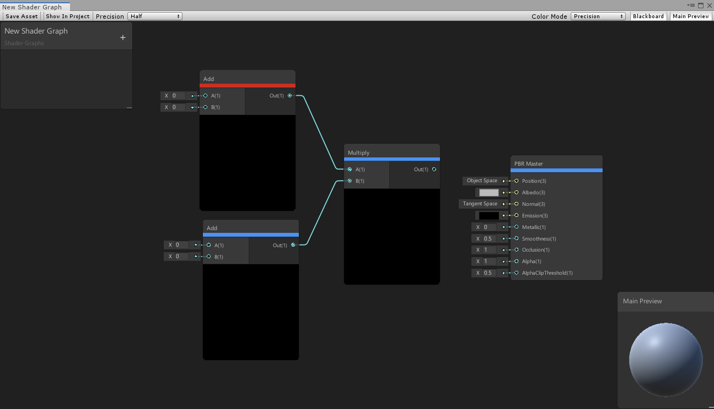

Shader Graph allows you to set specific precision data modes for optimization across different platforms. Use the Precision drop-down menu in the top left corner to set the precision for the entire graph, or the gear icon menu on each node to set the precision for individual nodes on the graph.
See Precision Types for more information about type options.
| Name | Description |
|---|---|
| Float | Sets the precision mode to float. |
| Half | Sets the precision mode to half. |
| Inherit | Sets the precision mode to inherit. See Precision Inheritance below. Only available on nodes. |
To visualize data precision through the graph, use Color Mode located in the top right corner of the Shader Graph window. Set the Color Mode to Precision to visually indicate whether each node is using half or float in the current evaluation.

To set the precision for the entire graph to float or half, use the drop-down menu in the top left corner of the Shader Graph Window. By default, newly-created nodes use the precision set in this drop-down menu.
To set a unique precision for each node, use its gear icon menu. Based on the precision you set on each node, the precision type casts itself up or down as data flows through the graph.
For example, if you connect a half node to a float node, the data is upcast to float. If you then connect that float node to another half node, the data is downcast back to half.
Nodes have a precision option called inherit, which makes them inherit the precision mode of any incoming edges. All nodes use the inherit mode by default when you add them to a graph. When you set the inherit option for nodes that do not have any edge connections to their input ports, they use the Graph Precision setting.
For example, if you set Node A to inherit, it uses half as its precision mode because the Graph Precision is half.
A node reads precision from each input port. You can connect nodes with different precision modes to the input ports of a single node. In such cases, the resulting output is the highest available precision mode among the connected nodes.
For example, set Node D to inherit. Node B passes a precision of half to input port A. Node C passes a precision of float to input port B. Node D thus outputs float, which is the highest precision mode among the input ports on Node D.
You can also use precision modes to set nodes with no input ports. These are typically Input Nodes, which by default are set to inherit and use the Graph Precision. Similar to other nodes, use the gear icon menu of each input node to manually set the precision of the graph's input data.
When you set the inherit option for nodes that do not have connections to their input ports, they use the Graph Precision setting. If you change the Graph Precision mode, the precision of those nodes also change. It's important to keep track of nodes that you set to inherit, as they might result in a conversion bottleneck when you change the Graph Precision.
For example, if you change the Graph Precision from half to float, but manually set Node B to half, the data input to Node B changes from float to half, and then converts back to float again at Node D.
In Sub Graphs, precision behavior of the graph and nodes are the same as that in normal graphs. Use the same drop-down menu in the top left corner to set Graph Precision, and the same gear icon menu on each node to set Node Precision for individual nodes in a Sub Graph.
Set precision for the Sub Graph Output on the Output node. This precision applies to all output ports of the Sub Graph's Output node.
For Sub Graph Inputs, set precision modes for each individual Property on the Sub Graph's Blackboard. Properties that use the inherit option inherit the Graph Precision you set for the Sub Graph using the drop-down menu in the top left corner.
When you use a Sub-graph Node inside a main graph, the Sub Graph determines its own precision. The precision modes for input properties on the Sub Graph's Blackboard inherits the Sub Graph Precision of the Sub Graph Asset. The Sub Graph's output uses the precision of the Output node. You cannot change the precision of a Sub-graph Node inside a Shader Graph.
For example, set the Sub Graph Precision to half, and the Graph Precision to float. Then set both Input A and the Output node to inherit. The input and output ports of the Sub Graph inherit half from the Sub Graph Precision, even though you set the Graph Precision to float. If you want the inherit behavior of the Sub Graph to match that of the main graph, you must set the Sub Graph Precision to float as well.